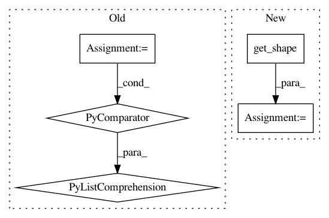

a02527e58d09b7f86575f5b790db1fa9dbc8e4e6,lib/gan.py,,discriminator,#Any#Any#Any#Any#Any#Any#,46
Before Change
last_layer = tf.reshape(last_layer, [batch_size, -1])
last_layer = tf.slice(last_layer, [single_batch_size, 0], [single_batch_size, -1])
net = tf.reshape(net, [config["batch_size"]*2, -1])
net = tf.concat(1, [net]+regularizers)
s = [int(x) for x in net.get_shape()]
net = tf.reshape(net, [s[0], 1, 1, s[1]])
net = conv2d(net, int(net.get_shape()[3]), name="d_endd2", k_w=1, k_h=1, d_h=1, d_w=1, stddev=0.1)
net = tf.reshape(net, [config["batch_size"]*2, -1])
net = tf.reduce_mean(net, 1)
After Change
regularizers = []
for regularizer in config["discriminator.regularizers"]:
regs = regularizer(config, net)
regularizers += [tf.reshape(r,[int(r.get_shape()[0]),1,1,int(r.get_shape()[1])]) for r in regs]
net = tf.concat(3, [net]+regularizers)
net = conv2d(net, net.get_shape()[3], name="d_endd3", k_w=1, k_h=1, d_h=1, d_w=1, stddev=0.3)
In pattern: SUPERPATTERN
Frequency: 3
Non-data size: 5
Instances
Project Name: HyperGAN/HyperGAN
Commit Name: a02527e58d09b7f86575f5b790db1fa9dbc8e4e6
Time: 2016-10-29
Author: martyn@255bits.com
File Name: lib/gan.py
Class Name:
Method Name: discriminator
Project Name: yangyanli/PointCNN
Commit Name: 86a4393efb842ad65bd170c8beacd40119fd27be
Time: 2018-04-10
Author: yangyan.lee@gmail.com
File Name: pointcnn.py
Class Name: PointCNN
Method Name: __init__
Project Name: reinforceio/tensorforce
Commit Name: 62cea7fcfcc9e20b784e08bddce5dc69b9578ef4
Time: 2019-01-05
Author: alexkuhnle@t-online.de
File Name: tensorforce/core/memories/replay.py
Class Name: Replay
Method Name: tf_retrieve_episodes